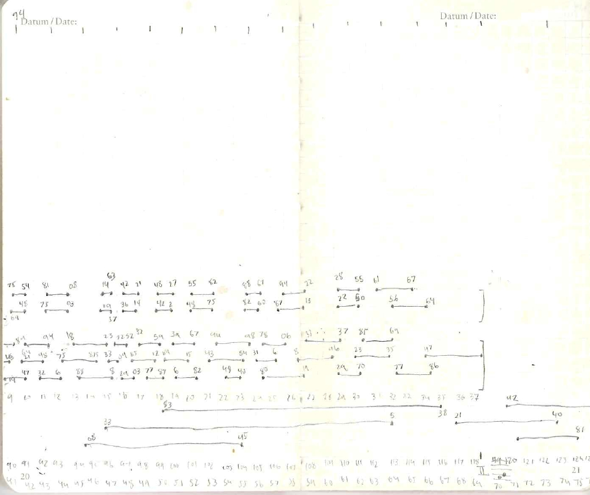

1-screen video, stereo or 8-channel audio

Framework II is composed of simple electronic sounds, created by waveguide opcodes in CSound and executed by a string of code. The piece is organized into nine overlapping sections of varying length which gradually fade in and out of view. Musical events are designed to unfold in a through-composed manner and with little structural hierarchy. It is the second in a series of works for varying instrumentation.
01.30.24 . 5pm CST . Napoleon Electronic Media Festival . Black Box Theater, Doudna Fine Arts Center, Eastern Illinois University . Charleston, IL . US
8-channel version
10.29.23-10.30.23 . MANTIS Festival of Electroacoustic Music, Audiovisual Installation . Martin Harris Foyer, The University of Manchester . Bridgeford St . Manchester . UK
2-channel version
03.06.23–03.09.23 . 11am - 2:30pm CEST . Performing Media Festival 2023: IQ - Wall Installation . Indiana University South Bend, 1700 E Mishawaka Ave . South Bend, IN . US
2-channel version
11.20.21 . 2pm CDT . Audio Visual Frontiers: Virtual Exhibition . Hosted by The Department of Music at UC Riverside and UCR ARTS . URL
2-channel version, online
09.27.21 . 8pm CDT . Spectrum I . Merrill Ellis Intermedia Theater, College of Music, University of North Texas . 415 Ave C, Denton, TX . US
8-channel version
JTTP 2023 - Audio Works . Hosted by the Canadian Electroacoustic Community . Online at Sonus.ca https://jttp.sonus.ca/2023/submissions.html
2023-present . in Dream Network: Multi-channel Music Library . CRANE Lab Acousmatheque . Chevigny, ARA . FR
2024 NoiseFloor UK, Accepted unperformed because I could not attend the event.
2023 International Electroacoustic Music Exhibition (MUSLAB), Accepted unperformed due to programming changes.